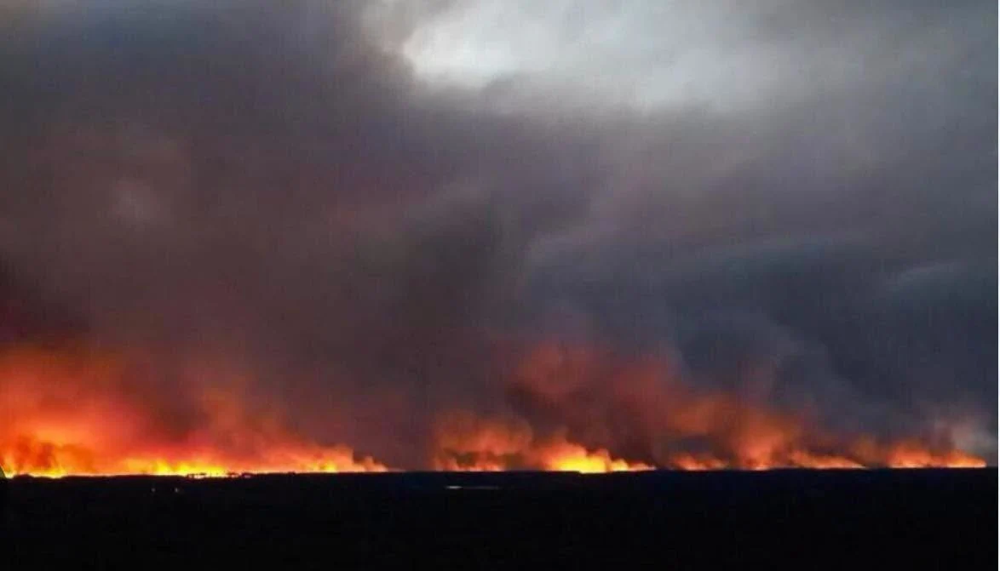

Publication relayée par le PCF 79
Incendies en Gironde. Fabien Gay demande des moyens de lutte contre les feux
Date de mise à jour indiquée par Facebook · 28 juillet 2026
Texte de la publication · Fabien Gay
Depuis quatre jours, je regarde avec consternation et tristesse les images de désolation qui me parviennent de mon département de naissance.
Un méga-feu parti de Saumos ravage la forêt de pins maritimes de Gironde, mais aussi une grande partie des Landes.
Ma famille y vit toujours, tout comme de nombreux amis.
Lège-Cap-Ferret calciné… C’est le décor de mon enfance : cette caravane posée à l’année dans le camping La Pinède, les chemins forestiers que nous arpentions, les cabanes bricolées dans les pins, et ces longues balades à vélo jusqu’à l’océan, de mars à octobre. Ce pays girondin, je le connais par cœur.
Ce feu ne ravage pas seulement la forêt de pins des Landes. Il consume nos souvenirs, les sentiers ombragés, les rires d’autrefois et une biodiversité riche dont il faut s’inquiéter. Il dévore les maisons et les rêves de ceux qui y ont construit leur vie.
Les flammes transforment les pignes de pin en grenades incandescentes. Un simple coup de vent suffit parfois à ranimer un feu couvant, rendant le combat des sapeurs-pompiers encore plus titanesque.
Une fois le brasier éteint, il ne reste que la nuit, les cendres et ces fumées toxiques qui hanteront longtemps le paysage.
Déjà plus de 40 000 hectares sont partis en fumée, et l’incendie frappe désormais aux portes de la métropole bordelaise.
Aujourd’hui, mes pensées vont vers les plus de 200 000 personnes déplacées, ainsi qu’aux sapeurs-pompiers, aux agents de la sécurité civile, de l’ONF et à toutes les équipes soignantes qui se battent sans relâche.
Quand le feu sera enfin maîtrisé, il faudra tirer les leçons de ce méga-incendie. Et une question me taraude :
Pourquoi sommes-nous si prompts à légiférer sous le coup de l’émotion — pour restreindre les libertés publiques, par exemple —, mais si réticents à mobiliser les centaines de millions d’euros nécessaires pour protéger durablement nos forêts ?
Imaginons que le Premier ministre réunisse d’urgence le Parlement en session extraordinaire en cette fin de mois de juillet pour voter une loi dotant la France d’une flotte renforcée de Canadairs ou accélérant l’acquisition d’aéronefs de lutte contre les feux : personne ne s’y opposerait. Personne ne rechignerait à investir massivement pour protéger nos vies et nos territoires. Pourtant, chaque été nos forêts brûlent, chaque été nos forces de sécurité civile nous alertent : la moitié de la flotte est clouée au sol, faute de moyens pour les réparer à temps. Et à chaque budget, au milieu de l’hiver, le gouvernement refuse d’augmenter les crédits. Il se trouve même des cours régionales des comptes pour demander au département de la Gironde, il y a encore quelques semaines, de réduire ses dotations au SDIS… qui accueille pourtant nos sapeurs-pompiers.
Et si, cette rentrée, les exploits de nos héros n’étaient pas déjà oubliés ? Avec la fin de l’été, la reprise du travail, une ou deux polémiques suffisent habituellement à effacer les épisodes caniculaires, le stress hydrique et le criant besoin de moyens aériens. Mais cette fois, tout ne peut plus reprendre comme avant. On ne peut pas laisser un gouvernement illégitime préparer un budget sous le signe de l’austérité… sauf, bien sûr, pour les armées, tout en oubliant une fois de plus nos forêts.
Si nous avons pu mobiliser des milliards pour sauver les banques en 2008, nous devons être capables de mobiliser des centaines de millions pour la prévention. D’autant plus qu’au moment où j’écris ces lignes, un nouvel épisode caniculaire se profile pour mercredi.
Et si, cette fois, nous refusions d’oublier et décidions enfin de consacrer les moyens nécessaires pour protéger nos vies et nos territoires ?

Sources
Fabien Gay · publication relayée par le PCF 79 · bibliothèque Facebook · AR-0002-FB-00726
À lire aussi · Le PCF de Gironde appelle à renforcer la prévention des feux de forêt